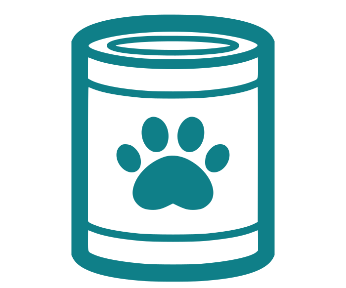

Schnellrechner

Wähl oben eine Katze und ein Futter aus, um deine Tagesmenge zu berechnen.Richtwert ohne Gewähr · ersetzt keine tierärztliche Beratung, besonders bei Diät, Erkrankung oder Kitten.
Tagesplaner
Wähl zuerst eine Katze aus, um ihren Tagesplan zusammenzustellen.
| Futter | Typ | Gramm | kcal |
|---|
Noch keinen Tagesplan zusammengestellt.
Meine Tagespläne
Noch kein Tagesplan für diese Katze gespeichert.
Meine Katzen
Noch keine Katze gespeichert.
Mein Futter
Noch kein Futter gespeichert.
Wusstest du schon?
- Nassfutter hat typischerweise 70-80% Feuchtigkeit; entsprechend weniger Kalorien pro Gramm als Trockenfutter.
- Katzen haben einen ausgeprägten Geruchssinn beim Fressen; ist das Futter zu kalt (aus dem Kühlschrank), wird es oft verschmäht.
- Der Wasserbedarf einer Katze wird zu großen Teilen übers Futter gedeckt; ein Grund, warum Nassfutter bei manchen Katzen sinnvoller ist.
Liebevoll gemacht für Katzenliebhaber · Alle Angaben ohne Gewähr · Tierärztlichen Rat einholen bei Erkrankungen
Häufige Fragen
Wie wird der Tagesbedarf meiner Katze berechnet?
Der Tagesbedarf basiert auf dem Ruheenergiebedarf (RER), berechnet aus dem Körpergewicht nach einer anerkannten Formel der Veterinärernährung (RER = 70 × Körpergewicht in kg0,75). Je nach Lebensphase und Kastrationsstatus wird dieser Wert angepasst; kastrierte Katzen haben einen niedrigeren Energiebedarf als unkastrierte, Kitten einen deutlich höheren.
Wie wird die Futtermenge aus den Nährwerten berechnet?
Der Energiegehalt deines Futters wird aus den analytischen Bestandteilen berechnet; genau den Werten, die du auf der Rückseite der Futterverpackung findest (Feuchte, Protein, Fett, Rohfaser, Rohasche). Diese Berechnung folgt dem in der Tierernährung gebräuchlichen Weender-Verfahren mit einer verdaulichkeitskorrigierten Energiewertformel, wie sie auch in der veterinärmedizinischen Fachliteratur verwendet wird.
Welche wissenschaftlichen Quellen verwendet der Rechner?
Der Tagesbedarf basiert auf der allometrischen RER-Formel (Ruheenergiebedarf = 70 × Körpergewicht in kg0,75), einem Standardansatz aus der veterinärmedizinischen Ernährungslehre, wie er unter anderem in den Ernährungsleitlinien der WSAVA und im NRC-Werk „Nutrient Requirements of Dogs and Cats“ beschrieben ist. Der Energiegehalt des Futters wird mit der von Ellen Kienzle für Katzen angepassten Weender-Stoffwechselenergie-Formel berechnet, die analytische Bestandteile (Feuchte, Protein, Fett, Rohfaser, Rohasche) über Verdaulichkeitsfaktoren in kcal umrechnet. Die kcal-Werte für Öle und Eigelb im Zusatz-Bereich stammen aus der USDA FoodData Central Datenbank. Der gesamte Rechenweg ist offen einsehbar im Quellcode dieses Projekts.
Kannst du mir ein Rechenbeispiel zeigen?
Eine kastrierte, erwachsene Katze mit 4 kg Gewicht hat einen Tagesbedarf von rund 200 kcal. Bei einem Nassfutter mit 85 kcal pro 100 g entspricht das etwa 235 g Futter am Tag, aufgeteilt auf 3 bis 5 Mahlzeiten.
Wie oft sollte ich meine Katze füttern?
Die Tagesmenge kannst du auf 3 bis 5 kleine Mahlzeiten aufteilen. Katzen fressen von Natur aus lieber öfter und in kleineren Portionen als ein bis zwei große Mahlzeiten.
Ist Nassfutter oder Trockenfutter besser?
Nassfutter hat einen deutlich höheren Wasseranteil (70–80 % gegenüber ca. 10 % bei Trockenfutter) und deckt so einen großen Teil des täglichen Wasserbedarfs mit ab. Trockenfutter ist kalorienreicher pro Gramm.
Was, wenn meine Katze übergewichtig ist?
Wähle bei „Status“ die Option „Übergewichtig / Diät“ – der Rechner setzt dann einen niedrigeren Energiefaktor an. Eine Gewichtsreduktion sollte langsam und idealerweise tierärztlich begleitet erfolgen.
Woher bekomme ich die Werte Feuchte, Protein, Fett, Rohfaser und Rohasche?
Diese stehen unter „Analytische Bestandteile“ auf der Rückseite der Futterverpackung.
Wer steckt hinter diesem Rechner?
Ich habe diesen Rechner gebaut, weil die Angaben auf der Rückseite oft ungenau sind. Außerdem hat keine andere Seite kombiniert, was ich gebraucht habe. Er läuft komplett lokal in deinem Browser, deine gespeicherten Katzen- und Futterdaten verlassen dein Gerät nie.